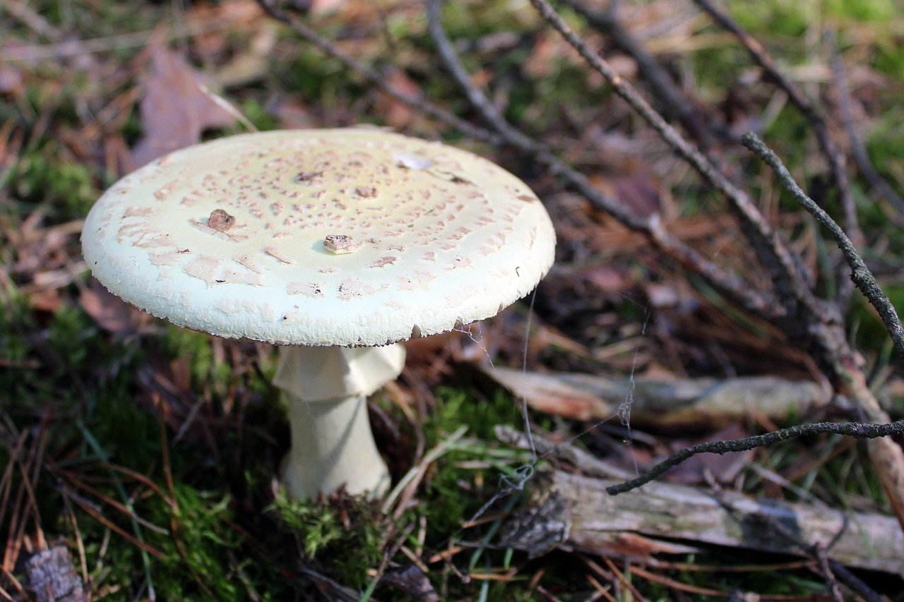
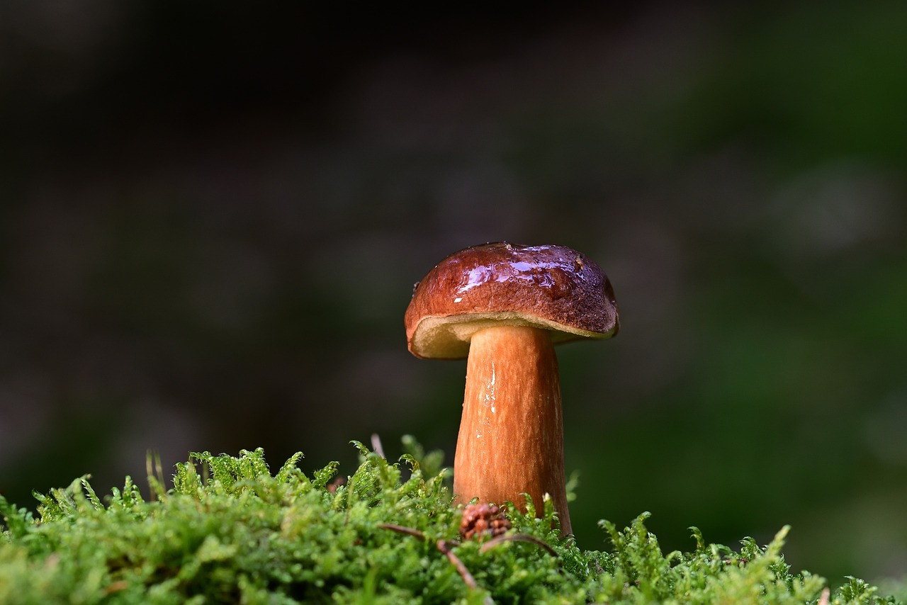

Atlas Grzybów
Borowik szlachetny
Jeden z najbardziej cenionych grzybów w Polsce. Posiada mięsistą, ciemnobrązową kapelusz i jest doskonały w kuchni, zwłaszcza w zupach i sosach.
Jest grzybem jadalnym i łatwo rozpoznawalnym dzięki jego charakterystycznym cechom. Rośnie w lasach iglastych i mieszanych.
... czytaj dalej
Kurki
Kurki to grzyby o intensywnym, pomarańczowym kolorze. Cechują się delikatnym smakiem i są popularnym składnikiem w kuchni.
Jadalne i łatwe do zebrania, kurki rosną w lasach iglastych, a ich sezon trwa latem i wczesną jesienią.
... czytaj dalej
Muchomor sromotnikowy

Jeden z najbardziej trujących grzybów na świecie. Muchomor sromotnikowy zawiera silne toksyny, które mogą prowadzić do śmierci.
Warto znać jego charakterystyczne cechy, aby uniknąć pomylenia z innymi, jadalnymi grzybami. Rośnie w lasach liściastych i mieszanych.
... czytaj dalej
Podgrzybek brunatny

Podgrzybek brunatny to smaczny grzyb jadalny, który doskonale sprawdza się w wielu potrawach, takich jak zupy czy farsze.
Ma ciemnobrązowy kapelusz i rośnie w lasach iglastych oraz liściastych. Jest bardzo ceniony przez grzybiarzy.
... czytaj dalej
Pieczarka polna
Pieczarka polna to jeden z najczęściej zbieranych grzybów. Cechuje się białym kapeluszem i białym trzonem. Jest doskonała do smażenia i duszenia.
Rośnie na łąkach, pastwiskach i w lasach. To grzyb jadalny, który można łatwo rozpoznać w terenie.
... czytaj dalej
Niestety na razie to wszystko... nasza baza wymaga aktualizacji